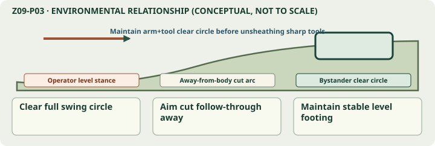

Z09-P03 · Tools and construction · New manuscript
Establish safe work circles and body-clear cutting lanes
Prevent glancing blows and cut follow-through injuries to yourself and companions during camp tool work.
When it applies · Any cutting, sawing, chopping, splitting or cordage-tensioning activity in camp or during emergencies.
Equipment · Clear level ground, stable footwear, eye protection where available and clear verbal warning rule.

Actions
- Clear bystanders, pets, tents and trip hazards well outside an arm-plus-tool-length swing radius (often called a blood circle) before unsheathing cutting or swinging tools.[K03, K08]
- Orient every cutting stroke away from your thighs, torso, knee arteries and supporting hand—always predict where the blade will travel if the wood splits suddenly or the edge slips.[K02, K08]
- Plant stable balanced footing on clear level ground rather than kneeling awkwardly on slick rocks, wet logs or loose gravel.[K08, K03, ED]
Failure recognition · Carving a stick braced against your thigh or chopping branches while a companion walks behind your backswing.[K02, K03, K08]
Verify · Confirm zero people or gear inside the work radius, clear follow-through path and solid level stance before the first cut.[K02, K03, K08, ED]
Stop or change course · Pause immediately whenever anyone steps inside the work zone, footing slips or visibility drops; re-sheath the tool before moving.[K03, K08, ED]
Evidence and editorial notes
- K02 · OSHA · Hand and Power Tools (OSHA 3080) (agency PDF)
- Section: Hand Tools > Knives, Chisels, Impact and Wrenches · Conditions: Manual cutting, striking and prying operations
Support: Direct cutting blades away from the body and bystanders, never use cracked wooden handles or mushroomed striking heads, and do not substitute wrenches or blades as pry bars.
Limitations: Does not specify material tensile ratings for improvised handles. · Conflicting evidence: None; directly informs safe cutting and impact-tool failure cards.
Editorial note: Prevents blade slip, splintered-handle and spalling-metal injuries. · Specialist reviewer: Tool safety and wilderness medicine
Primary source · checked 2026-11-24 - K03 · USDA Forest Service · Handtools for Trail Work (0523-2810-MTDC) (agency handbook)
- Section: Tool Selection, Inspection and Safe Transport · Conditions: Trail and campsite hand tools (axes, saws, shovels, pulaskis, wedges)
Support: Inspect handles for splits, loose heads and secure wedges before every use; sheath sharp edges during carry and maintain a clear work circle around swinging tools.
Limitations: Forestry guidelines apply to maintained commercial tools; improvised stone or salvaged blades carry higher failure risk. · Conflicting evidence: None; aligns with OSHA-3080.
Editorial note: Grounds woodworking, swinging-tool clearance, carrying and maintenance cards. · Specialist reviewer: Forestry tool safety and trail maintenance
Primary source · checked 2026-11-24 - K08 · OSHA · Hand and Power Tools (OSHA 3080) (agency PDF)
- Section: Personal Protective Equipment and Work Area Control · Conditions: Cutting, splitting, striking and rigging operations
Support: Maintain stable footing, eye and hand protection appropriate to flying chips or snapped cordage, and clear bystanders outside the swing or snap-back zone.
Limitations: Field kits often lack shop PPE, requiring slower conservative technique and lower-energy methods. · Conflicting evidence: None; drives snap-back and work-circle exclusion zones in Z09.
Editorial note: Enforces conservative work circles and snap-back clearance. · Specialist reviewer: Tool safety and occupational safety
Primary source · checked 2026-11-24
Source lineage · OSHA 3080 and USFS handtools; new manuscript · Classification · New manuscript.